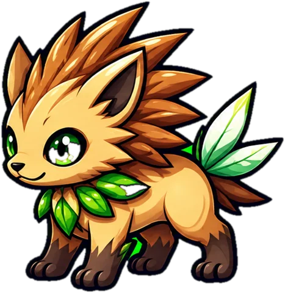

 GrassEarth
GrassEarthTap a stage to read its story.
A small, endearing pup with warm sandy-brown fur, perky ears, and a ruff of short leaf-shaped quills sprouting from its neck and shoulders, Thornling bounds across the Amber Desert's scrub margins with cheerful disregard for the heat. Its quills are soft enough that children can pat it without hesitation, and it knows this - it approaches humans with a tail wag that sets its quills rattling together in a soft leaf-brush sound. Thornling caches seeds from desert plants under rocks, creating tiny gardens that often outlast the Thornling itself. The desert farmers say Thornling is the desert's own gardener.
Field note: Thornling has been documented burying viable seeds in germination-ready soil pockets at a rate better than experienced desert horticulturalists.
Amber Desert. Thornling and its family are found in the Amber Desert. See everyone who lives there.
Share a Bond Food that matches its types to become friends. Thornling loves:
A Bond Food is not a trick. It joins your spirit with the Kimuro's spirit, and only when it chooses you.
Print the Kimuro adventure packs: mazes, cards, a board game and Bond Mark medals.
See the printable packs